Requirement: To setup this operation, First we have to setup Lab 03 Spike Isothermal Lab.
8.5. Assigning Temperature for Billet
8.6. Assigning Hammer Movement for Top Die
8.7. Generating 1st Operation Database
8.9. Post-Processing the 1st operation Results
8.12. Assigning Top Die Movement
8.13. Generate Inter-object Contacts
8.15. Generating 2nd operation Database
8.16. Simulating 2nd operation
8.17. Post-Processing the 2nd Operation Results
On a Windows machine, go to the button select DEFORM-v1x.xxx (.xxx indicates version number E.g. v14.0.2) and select DEFORM GUI Main vxx.xx from the menu. The DEFORM GUI Main window will appear.
Create a new problem either by selecting File  New Problem or by clicking the New Problem
New Problem or by clicking the New Problem  icon. The Problem Setup window will appear. Select "Integrated Manufacturing Process" radio button and unit system as "English" radio button in unit field. Define Problem Name as " Spike_Hammer"
and make sure the “Show option dialog” check box is turned on (if we do not turn on the “Show option dialog” check box, then we will not get the New Project dialog). Then click on
icon. The Problem Setup window will appear. Select "Integrated Manufacturing Process" radio button and unit system as "English" radio button in unit field. Define Problem Name as " Spike_Hammer"
and make sure the “Show option dialog” check box is turned on (if we do not turn on the “Show option dialog” check box, then we will not get the New Project dialog). Then click on  button to open a new problem using the Deform Integrated Manufacturing Process.
button to open a new problem using the Deform Integrated Manufacturing Process.
Multiple operation wizard will open with the New Project dialog (See Fig. L8.1.), at this point user will be prompted to specify a project name (system will create a separate folder with this project name) and title for this session. In this lab we use ‘Spike_Hammer’ as the project name.
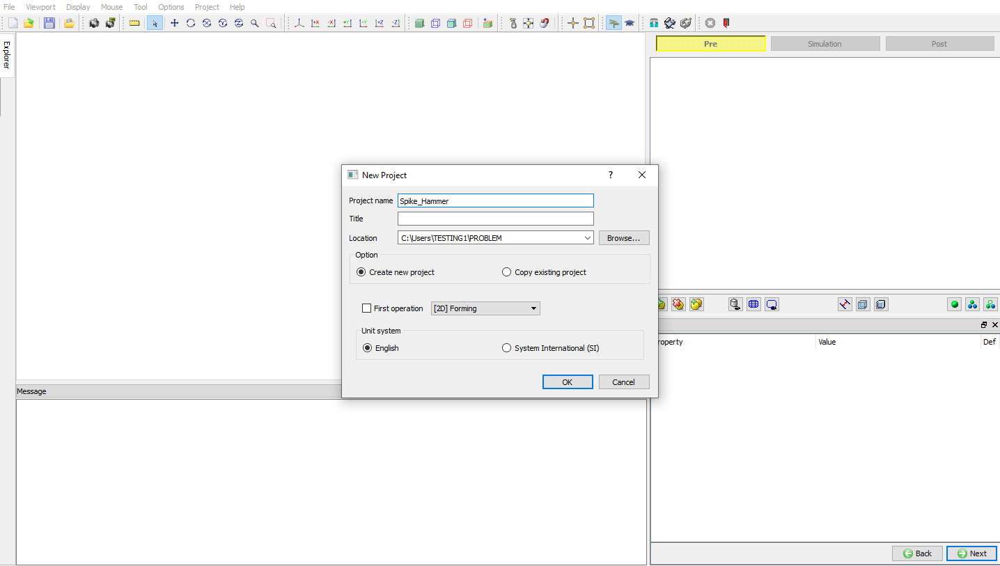
Assigning Project Name
User can also change the Unit system, project saving file location and add operation by selecting from First operation pull down list and checkbox (See Fig. L8.1.).
Using copy Existing project option we can import previous saved projects as new project. Click on  to continue to open the operation.
to continue to open the operation.
Multiple Operation wizard will open. Add 2D Forming operation from the Explorer Operations list. Operation can be add by clicking on 2D Forming operation  button or user can also
add by drag and drop into the Operation Editor.
button or user can also
add by drag and drop into the Operation Editor.
Using Import option , load the database of problem Spike_Isothermal, select -1 step in the Step selection window (See Fig. L8.2.),
then click on  .
.
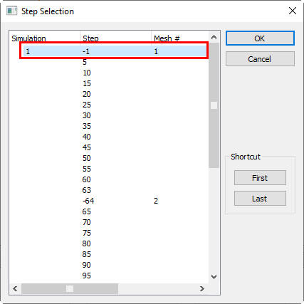
Selecting step in Step Selection window
In material list, delete the AISI-1035,COLD[70-400F(20-200C)] material from the list by highlighting the material click on  button (See Fig. L8.3.).
button (See Fig. L8.3.).
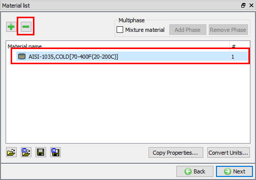
Deleting the Material from the Material list
Load the material AISI-1045_(20-1100C) from DEFORM Material library, from Steel category using  (Load material data from library) option.
Then click on
(Load material data from library) option.
Then click on  upto Billet page.
upto Billet page.
Assign Object temperature as 2250°F (See Fig. L8.4.) and click on  until Top die movement page.
until Top die movement page.
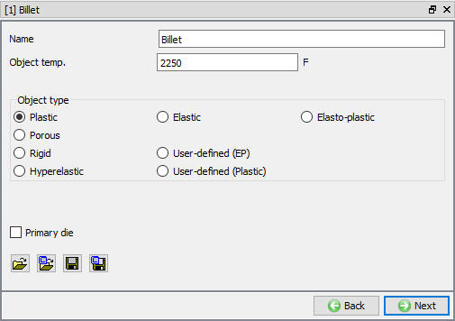
Billet Object page
In Top Die movement page, select Hammer movement type, define Energy as 250Klb-in, Hammer mass as 0.265e-3 Klb-s^2/in and Blow efficiency as 0.6 (see Fig. L8.5.). Click on  until Generate DB page.
until Generate DB page.
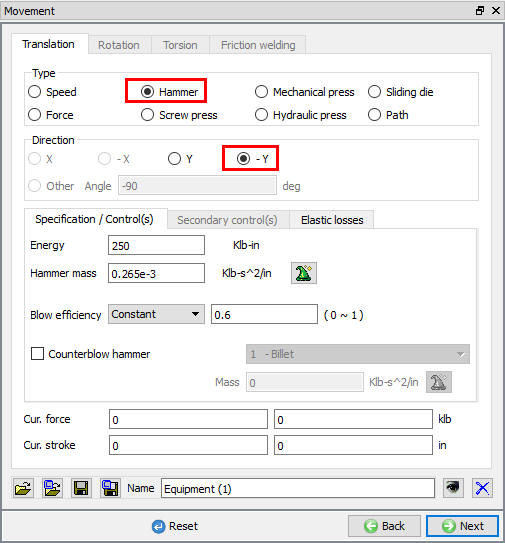
Top die movement page
Click the  button to have the program check to see if anything was missed in the problem setup. During the checking process:
button to have the program check to see if anything was missed in the problem setup. During the checking process:
Messages in the red color signify data that needs to be fixed before a simulation can be run (such as when you forget to define any material data).
Click on button to generate the database. When the program is done writing the database, click on
button to generate the database. When the program is done writing the database, click on  tab to run simulation.
tab to run simulation.
Click on the  action label to open the Run Options dialog Use the default Continue Run option to select “Continue from the last step” option
and then select the Simulation mode as Interactive and click on
action label to open the Run Options dialog Use the default Continue Run option to select “Continue from the last step” option
and then select the Simulation mode as Interactive and click on  button to run the simulation.
button to run the simulation.
The progress of the simulation can be monitored as it is running by looking at the Simulation Message and Simulation Graphics in Simulation mode. Click the Simulation Message tab to view the Message file. As long as the option is checked, which is the default setting, the Message file will refresh every couple of seconds.
The Message file provides information about which simulation step the simulation is currently on and also gives information dealing with how well the simulation is running.
When the simulation has finished, the following message will be added to the end of the Message file:
"PROGRAM STOPPED!
***** PRESS ENERGY HAS BEEN FULLY CONSUMED.".
After simulation has been completed, click on  tab, MO post processor will open.
tab, MO post processor will open.
Plot Y Load-Stroke graph:
Click the icon, the Load Stroke Graph window will open. Select the Top Die in Plot object list, in X-Axis pull down menu select
Stroke and in Y-Axis pull down menu select Y Load. Click on options tab and check Step tracer check box, then click on . Click on button in Step browser and Play animation (See Fig. L8.6.).
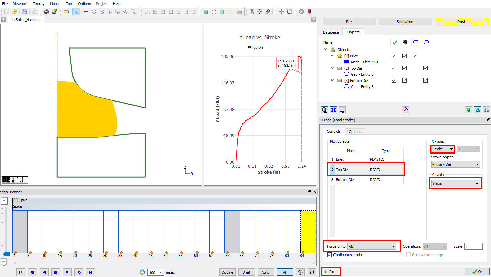
Load Stroke Graph plot
Plot Y Velocity -Stroke graph:
In Y-Axis pull down menu select Y-Speed and click on and see the Graph. (See Fig. L8.7.)
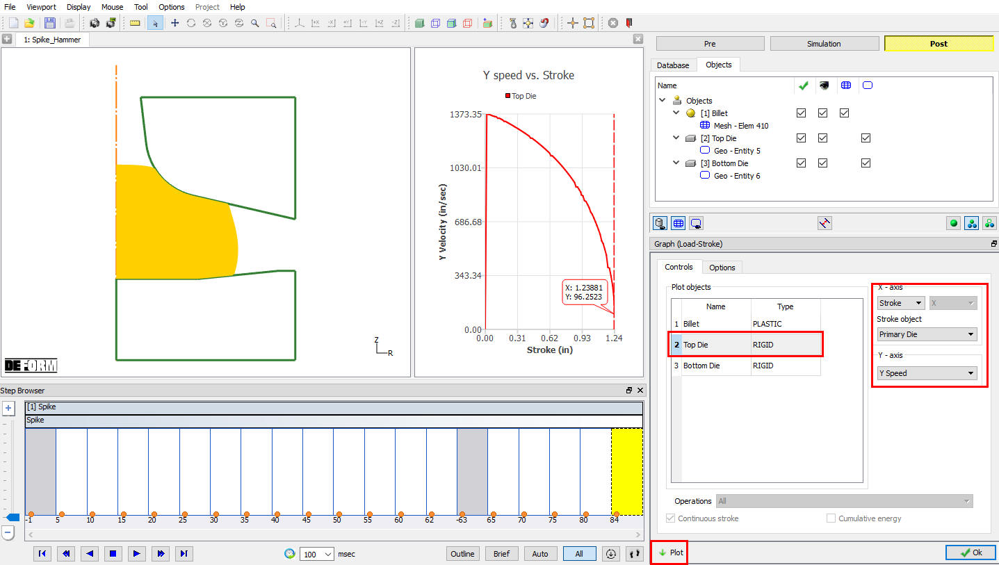
Velocity Stroke graph plot
After completion of Post processing, click on button, add another 2D Forming operation. In this operation we are using the same objects and we are doing second blow operation.
Click on second Forming operation in Operation editor, Select Interactive mode type in Setup type popup, then click on  until Object page.
until Object page.
In interactive mode all previous operation objects are added and their data is loaded from previous operation last step automatically, as shown in Fig. L8.8. As no new objects are required in 2nd operation and all objects data is loaded from previous operation last step select Top die Movement branch from object Tree.
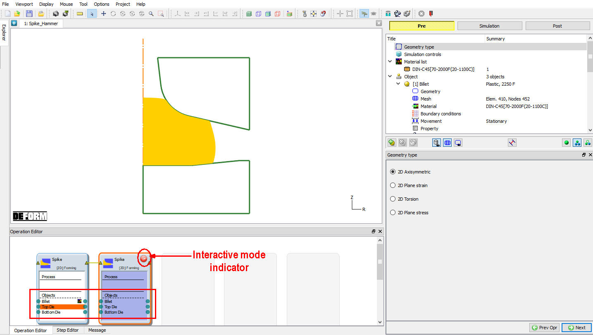
Interactive 2nd operation setup object page
In Movement page, define Energy value as 250 Klb-in. Click on Contact branch in object tree.
Contact relation ship data has be already copied from previous operation as shown in Fig. L8.9., if not by selecting user type click on  button and select appropriate friction coefficient using
button and select appropriate friction coefficient using
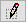
(Edit) button. After defining the friction coefficient for any relation same values can be copied to other relations using
For this lab as inter-object relations data and contacts are loaded from previous operation no need to generate the contacts, so click on  until Step controls window.
until Step controls window.
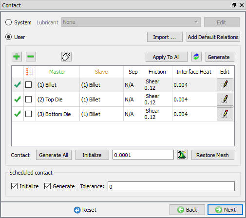
Inter-object Contact generation page
In Step controls page, define Solution step definition with constant die displacement as 0.015 in and number of steps to 50 (see Fig. L8.10.).
Then click on  .
.
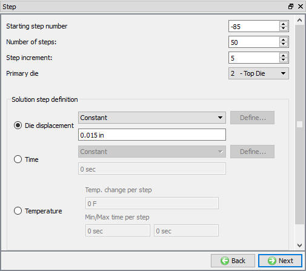
Simulation controls
In Generate DB page, click the  button to have the program check to see if anything was missed in the problem setup.
button to have the program check to see if anything was missed in the problem setup.
Click on the  button to generate the database. When the program is done writing the database, click on
button to generate the database. When the program is done writing the database, click on  tab to run simulation.
tab to run simulation.
Click on the  action label to open the Run Options dialog Use the default Continue Run option to select “Continue from the last step” option
and then select the Simulation mode as Interactive and click on
action label to open the Run Options dialog Use the default Continue Run option to select “Continue from the last step” option
and then select the Simulation mode as Interactive and click on  button to run the simulation.
button to run the simulation.
The progress of the simulation can be monitored as it is running by looking at the Simulation Message and Simulation Graphics in Simulation mode. Click the Simulation Message tab to view the Message file. As long as the option is checked, which is the default setting, the Message file will refresh every couple of seconds.
The Message file provides information about which simulation step the simulation is currently on and also gives information dealing with how well the simulation is running.
When the simulation has finished, the following message will be added to the end of the Message file:
"PROGRAM STOPPED!
***** PRESS ENERGY HAS BEEN FULLY CONSUMED.".
After simulation has been completed, click on  tab, MO post processor will open.
tab, MO post processor will open.
Review LOAD-STROKE and VELOCITY-STROKE plots of 2nd operation as shown in Fig. L8.11. and Fig. L8.12.
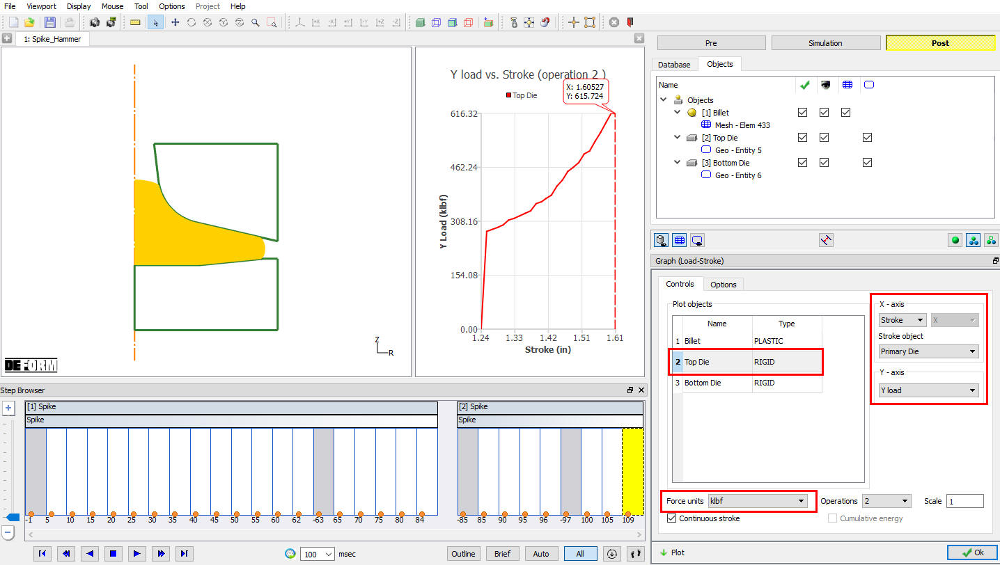
Load verses Stroke Graph
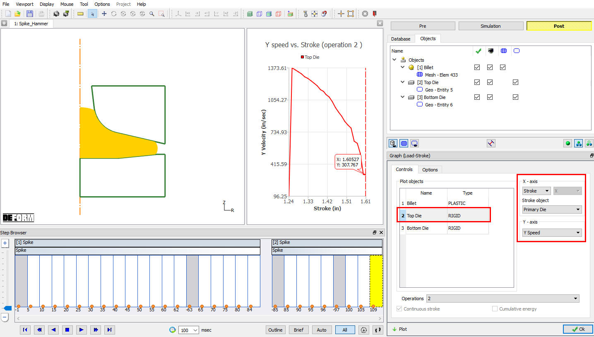
Velocity verses Stroke Graph
After completion of Post processing, save the Project and close the MO wizard by clicking Close button or selecting Quit option under File menu.
Related Topics:
15. Movement Controls Settings
6.2. Integrated Manufacturing Process Simulation layout